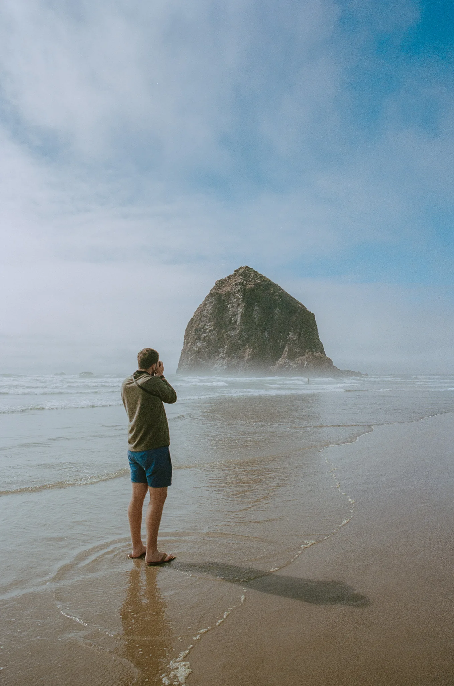

Trusted by teams, brands & publications


Cincinnati, Ohio — Photographer & Videographer
Trusted by teams, brands & publications

About
I'm a Cincinnati based photographer and videographer creating cinematic imagery of sports, cityscapes, architecture, and the places that define our region.
Since 2019, I've partnered with a variety of organizations to tell stories through imagery. Whether shooting from the ground or the air, my approach combines technical precision with a cinematic eye for composition, delivering visuals that are both memorable and impactful.
What I shoot

NFL, MLS, and college sports — peak action, atmosphere, and the story of the game.

Drone photography, video, and hyperlapses from perspectives only possible above.

Skylines and architecture through bold composition, scale, and cinematic light.

Imagery for brands, tourism organizations, editorial publications, and licensing.